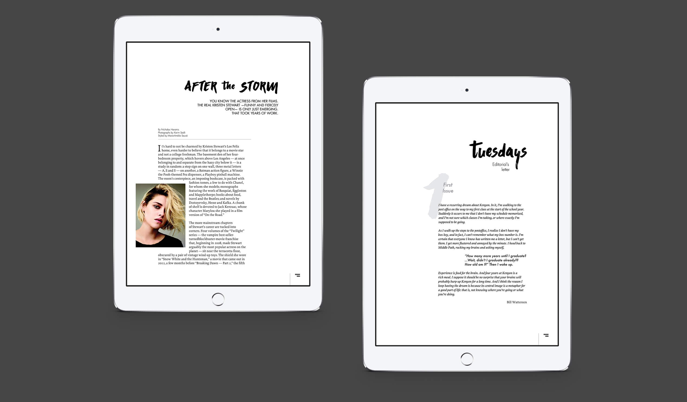
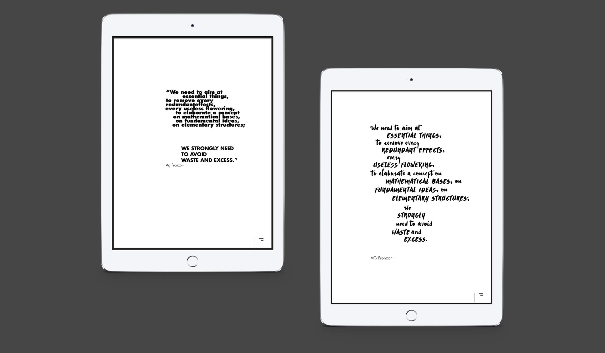
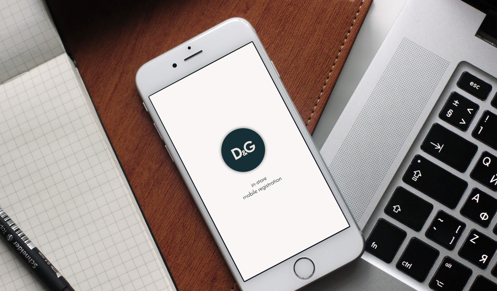

Nice to meet you, i'm Giorgio Giachetti, i'm into clean and functional interfaces with focus on usability. Currently looking for an internship.
I’m an Italian designer currently based in Milan. I graduated in Industrial design at I.U.A.V. university in Venice, intern at Night Owls Interactive in New York and now i’m attending a master in Web and Digital design at SPD.
Always combining form with function, my practice finds its ground in simplicity. I firmly believe user experience is unseparable from the visual aspect of a digital product, every small detail can’t be obmitted. I have a strong interest in Front-end coding with focus on writing clean and efficient code.
Atm design
UX-UI design
_
Review and re-design the ATM App user interface in order to make it more usable focusing on errors generated, efficiency and learnability.


Slide to see more
Tuesdays
Visual design
_
Design of a fashion digital magazine for Ipad with a strong focus on typography.
Dolce&Gabbana

UX design - Strategy
_
App design for sales assistans focusing on collecting data from clients in a efficient and non-invasive way.
Slide to see more
Oakley
Storytelling - Ux
_
Re-design of Oakley website engaging the user through the sponsored athletes and the sports. Moreover focus on some usability issue.